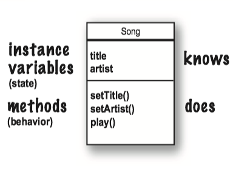
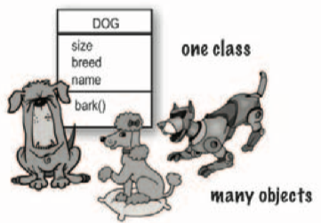

Head first Java
Notes, Head first Java, 2nd Edition
- 1 Dive in A Quick Dip
- 2 Classes and objects
- 3 Primitives and references
- 3.1 primitive variable
- 3.2 Reference variable
- 3.3 Array
- 4 Methods use instance variables
- 5 Writing a Program
- 6 Get to know the Java API
- 7 Inheritance and polymorphism
- 8 Interfaces and abstract classes
- 9 Constructors and garbage collection
- 10 Numbers and statics
1 Dive in A Quick Dip
Java has friendly syntax, object-oriented features, memory management, and best of all - the promise of probability (write-one/run-anywhere).
You type a source code file(.java). compile it using the javac compiler, then run(java) the compiled bytecode(.class) on a java virtual machine.

Every Java application has to have at least one class, and at least one main method.
The main method public static void main(String[] args){//your code goes here}is where your program starts running.
Java has three standard looping constructs: while, do-while, and for.
A boolean and an integer are not compatible types in Java.
int x=1;
while (x) {} //wrong
System.out.println inserts a newline, System.out.print keeps printing to the same line.
2 Classes and objects
2.1 Object Oriented
What do you like about OO? Some people say...
- It helps me design in a more natural way. Things have a way of evolving.
- Not messing around with the code I've already tested, just to add a new feature.
- Reusing code in other applications. When I write a new class, I can make it flexible enough to be used in something new, later
2.2 Class
A class describes what an object knows(instance variables) and what an object does(methods).

What's the difference between a class and an object?
- A class is not an object. A class is the blueprint for an object. It tells the JVM how to make an object of that particular type. Each object made from that class have its own values for the instance variables of that class.

2.3 main
The two uses of main:
- to test your real class
- to launch/start your Java application.
3 Primitives and references
Variables must always be declared with a name and a type. Variables come in two flavors: primitive and reference.(变量的生命必须有类型和名称。变量有两种：primitive和引用)
3.1 primitive variable
A primitive variable value is the bits representing the value. primitive变量的值是表示该值的位。
3.2 Reference variable
- A reference variable value is the bits representing a way to get to an object on the heap.引用变量的值是表示一种到达堆上的对象的方法的位。
- A reference variable is like a remote control. Using the dot operator(
.) on a reference variable is like pressing a button on the remote control to access a method or instance variables. - A reference variable has a value of
nullwhen it is not referencing any object.
3.3 Array
- An array is always an object, even if the array is declared to hold primitives.
- Every element in an array is just a variable.
The three steps of object declaration, creation and assignment.
(e.g. Dog myDog = new Dog());
- declare a reference variable: tell the JVM to allocate space for a reference variable, and names that variable myDog
- create an object: tells the JCM to allocate space for a new Dog object on the heap.
- Assigns the object to the reference variable.

4 Methods use instance variables
4.1 Methods
Class define what an object knows and what an object does. Things an object knows are its instance variables(state), things an object does are its methods(behavior).
Methods:
A method uses parameters. A caller passes arguments.
- Arguments are the things you pass into the methods.
- If a method takes a parameters, you must pass it something.
- Methods can return values. Every method is declared is declared with a return type.
- If you declare a method to return a value, you must return a value of the declared type or a value that is compatible with the declared type.
- Java is pass-by-value, which means pass-by-copy.
4.2 Getters and setters
Getters and setters let you, well, get and set things.
- A Getter's sole purpose in life is to send back, as a return value, the value of whatever it is that particular Getter is supposed to be Getting.
4.3 Encapsulation
By forcing everybody to call a setter method, we can protect variables from unacceptable changes.
theCat.height = 0 //yikes! we can't let this happen
public void setHeight(int ht){
if (ht>9){ // we put in checks to guarantee a minimum cat height.
height=ht;
}
}
An encapsulation starter rule of thumb: mark your instances variables private, and provide public getters and setters for access control.
- Encapsulations puts a force-field around instance variables, so nobody can set them to something inappropriate.
- The point to setters (and getters, too) is that you can change your mind later, without breaking anybody else’s code!
class GoodDog {
private int size; //Make the instance variable private
public int getSize() { // make the getter methods public
return size;
}
public void setSize(int s) { // make the setter methods public
size = s;
}
// even though the methods don't really add new functionality,
// the cool thing is that you can change your mind later.
// you can come back and make a method safer, faster, better
void bark() {
if (size > 60) {
System.out.println(“Wooof! Wooof!”);
} else if (size > 14) {
System.out.println(“Ruff! Ruff!”); }
else {
System.out.println(“Yip! Yip!”);
}
}
}
4.4 Instance variables
You don't have to initialize instance variables, because they always have a default value:
- intergers: 0
- floating points: 0.0
- booleans: false
- references: null
4.5 Instance and local variables
The difference between instance and local variables:
- Instance variables are declared inside a class but not within a method.
- Local variables are declares within a method .
- Local variables must be initialized before use.
4.6 Comparing variables
If you want to know if two objects are equal, you need the .equal() method.
- whether two different objects should be treated as equal depends on what makes sense for that particular object type. (e.g. dog/string)
String S = "baby";
S.equal(another_string);
To see if two reference are the same (which means they refer to the same object on the heap) use the == operator.
Foo a = new Foo();
Foo b = new Foo();
Foo c = a;
if (a == b) { // false }
if (a == c) { // true }
if (b == c) { // false }
To compare two primitives, use the == operator.
- Operator
==doesn't care about the size of the variable, so all the extra zeros on the left end don't matter.
int a = 3;
byte b = 3;
if (a==b){ //true}
5 Writing a Program
- prep code: a form of pseudocode, to help you focus on the logic without stressing about syntax. 一种伪代码
- test code: a class or methods that will test the real code and validate that it's doing the right thing. 测试代码
- real code: the actual implementation of the class. 真实代码
Extreme Programming（极限编程):
- Write the test code first
- Make small, but frequent, releases
- Develop in iteration cycles.
6 Get to know the Java API
ArrayList is a class in the core Java library (the API).
-
boolean add(Object elem): Adds the objects parameter to the list(returntrue). -
boolean remove(int index): Removes the object at the index parameter. Returnstrueif the element was in the list. -
boolean remove(Object elem): Removes this object(if it's in the ArrayList). -
boolean contains(Object elem): Returnstrueif there's a match for the object parameter. -
boolean isEmpty(): Returnstrueif the list has no elements -
int indexOf(Object elem): Returns either the index of the object parameter, or -1 -
size(): Return the number of elements currently in the list. -
Object get(int index): Return the object currently at the index parameter.
You have to know the full name of the class you want to use in your code. You have two options:
- Import: put an import statement at the top of your source code file:
import java.util.ArrayList
- Type: type the full name everywhere in your code. Each time you use it.
java.util.ArrayList<Dog> list = new java.util.ArrayList<Dog>();
7 Inheritance and polymorphism
7.1 overriding
Overriding（重写) just means that a subclass redefines one of its inherited methods when it needs to change or extend the behavior of that method.
When one class inherits from another, the subclass inherits from the superclass. In Java, we say that the subclass extends the superclass.子类继承自父类。
Instance variables are not overridden because they don't need to be. They don't define any special behavior, so a subclass can give an inherited instance variable any value it chooses.实例变量无法被覆盖掉是因为不需要，它们并没有定义特殊的行为。
When you want to know if one thing should extend another, apply the IS-A test.若你想要知道某物是否应该要继承另一物时，则可以用IS-A(是一个)测试来检验。
If class B extends class A, class B IS-A class A. 如果类B继承类A，那么类B是一个类A。
if your subclass overriding method, you can call the superclass version using the keyword super.
// this calls the inherited version on roam(),
// then comes back to do your own subclass-specific code
public void roam(){
super.roam();
//my own roam stuff
}
There are four access levels, moving from most restrictive to least, the four access levels are: 四种权限，左边是最受限制的，而越往右边限制程度越小：
prive, default, protected, public
- public members are inherited. public类型的成员会被继承
- private members are not inherited. private类型的成员不会被继承
Inheritances lets you guarantee that all classes grouped under a certain supertype have all the methods that the supertype has. In other words, you define a common protocol for a set of classes related through inheritance. 继承让你可以确保某个父类型之下的所有类都会有父类型所持有的全部方法。也就是说，你会通过继承来定义相关类间的共同协议。
when you define a supertype for a group of classes, any subclass of that supertype can be substituted where the supertype is expected.
当你定义出一组类的父型时，你可以用子型的任何类来填补任何需要或期待父型的位置。
7.2 Polymorphism
With polymorphism, the reference type can be a superclass of the actual object type. 运用多态时，引用类型可以是实际对象类型的父类。
Animal[] animals = new Animal[3];
animals [0] = new Dog();
animals [1] = new Cat();
animals [2] = new Lion();
for (int i=0; i< animals.length; i++) {
animals[i].eat();
animals[i].roam();
}
You can have polymorphic arguments and return types. 参数和返回类型也可以多态。
class Vet {
public void giveShot(Animal a) {
// do horrible things to the Animal at
// the other end of the ‘a’ parameter
a.makeNoise();
}
}
class PetOwner {
public void start() {
Vet v = new Vet();
Dog d = new Dog();
Hippo h = new Hippo();
v.giveShot(d);
v.giveShot(h);
}
If I write my code using polymorphic arguments, where I declare the method parameter as a superclass type, I can pass in any subclass object at runtime. 如果我将程序代码编写使用多态参数，也就是说将参数声明为父类类型，我就可以在运行时传入任何的子类对象。
With polymorphism, you can write code that doesn't have to change when you introduce new subclass types into the program. 通过多态，你就可以编写出引进新型子类时也不必修改的程序。
There are three things that can prevent a class from being subclassed.
- A class can be non-public (if you don't declare the class as public. A non-public class can be subclassed only by classes in the same package as the class. 类可以是非公有的，非公有的类只能被同一个包的类作出子类。
- Using keyword modifier
finalto stop a class from being subclassed. 使用final修饰符阻止类被继承。 - If a class has only
privateconstructors, it can't be subclassed. 如果类只拥有private的构造程序，它不能被继承。
If you want to protect a specific method from being overridden, mark the method with the final modifier. 如果你想要防止特定的方法被覆盖，可以将该方法标识成final表示没有任何的方法可以被覆盖。
Rules for overriding:
- Arguments must be the same, and return types must be compatible. 参数必须要一样，且返回类型必须要兼容
- The method can't be less accessible. 不能降低方法的访问权限
7.3 Method overloading
Method overloading(方法重载) is nothing more than having two methods with the same name but different argument lists. 方法重载就是方法名称相同，但参数列表不同。
- Purpose: overloading lets you make multiple versions of a method, with different argument lists, for convenience to the callers. 重载可以有同一方法的多个不同参数列表的版本，方便了调用者。
- The return types can be different 返回类型可以不同
- You can't change only the return type 不能只改变返回类型
- You can vary the access levels in any direction 可以更改访问权限
8 Interfaces and abstract classes
What's an interface? it's a 100% abstract class.
What's an abstract class? it's a class that can't be instantiated.
8.1 Abstract classes
Here's where it gets weird:
Animal anim = new Animal();
There two are the same type, but what the heck does an Animal object look like?
Some classes just should not be instantiated!
How? By marking the class as abstract, the compiler will stop any code, anywhere, from ever creating an instance of that type. i.e. prevent a class from ever being instantiated.
Making a class abstract before the class declaration:
abstract class Caine extends Animal {
public void roam() {}
}
When you're designing your class inheritance structure, you have to decide which classes are abstract and which are concrete.
- Concrete classes are those that are specific enough to be instantiated.
- A concrete class just means that it's OK to make objects of that type.
- An abstract class has virtually no use, no value, no purpose in life, unless it is extended.
8.2 Abstract methods
An abstract method means the method must be overriden, whereas an abstract class means the class must be extended.
- there isn't any code that would make sense in the abstract method, you won't put in a method body. e.g.
public abstract void eat(). - If you declare an abstract method, you must mark the class abstract as well. You can't have an abstract method in a non-abstract class.
- You must implement all abstract methods.
8.3 The ultimate superclass: Object
Every class in Java extends class Object. Class Object is the mother of all classes; it's the superclass of everything.
- Any class that doesn't explicitly extend another class, implicitly extends Object.
Methods of Object class:
equals(): tell you if two objects are considered equal.getClass(): Gives you back the class that object was instantiated from.hashCode(): Prints out a hashcode for the objecttoString(): Prints out a String message with the name of the class and some other number we rarely care about.
Object is a non-abstract class because it's got method implementation code that all classes can inherit and use out-of-box, without having to override the methods.
The Object class serves two main purpose:
- to act as a polymorphic type for methods that need to work on any class that you or anyone else makes 作为方法的多态类型
- to provide real method code that all objects in Java need at runtime (and putting them in class Object means all other classes inherit them).提供Java在执行期堆任何对象都有需要的实现方法代码。
8.4 Using polymorphic references of type Object has a price
When you put an object into an ArrayList<Dog>, it goes in as a Dog, and comes out as a Dog:
// Make an ArrayList declared to hold Dog objects.
ArrayList<Dog> myDogArrayList = new ArrayList<Dog>();
// Make a Dog
Dog aDog = new Dog();
// Add the Dog to the list
myDogArrayList.add(aDog);
//Assign the Dog from the list to a new Dog reference variable
Dog d = myDogArrayList.get(0);
Everything comes out of an ArrayList<Object> as a reference of type Object, regardless of what the actual object is. 任何从ArrayList<Object>取出的东西都会被当作Object类型的引用，而不管它原来是什么。
// make an ArrayList declared to hold any type of Object
ArrayList<Object> myDogArrayList = new ArrayList<object>()
// make a Dog
Dog aDog = new Dog();
// Add the Dog to the list
myDogArrayList.add(aDog);
// No!! Won't compile!! the get() method returns type Object.
// The compiler knows only that the object inherits from Object,
// but it doesn't know it's a Dog!!
Dog d = myDogArrayList.get(0)
The compiler decides whether you can call a method based on the reference type , not the actual object type.
Object o = al.get(index);
// Class Object has a hashCode() method
// so you can call that method on any object in Java
int i = o.hashCode();
// Can't do this!! the Object class has no idea what it means to bark().
o.bark();

If you're sure the object is really a Dog, you can make a new Dog reference to it by copying the Object reference, and forcing that copy to go into a Dog reference variable, using a cast (Dog).
Object o = al.get(index);
// cast the Object back to a Dog we know is there.
Dog d = (Dog) o;
d.roam();
If you're not sure it's a Dog, you can use the instanceof operator to check.
if (o instanceof Dog) {
Dog d = (Dog) o;
}
8.5 Interface
Questions: what if you want to add Dog some Pet behaviors?
Option one: We take the easy path, and put pet method in class Animal.
- Pros: All the Animals will instantly inherit the pet behaviors. We won't have to touch the existing Animal subclasses at all.
- Cons: Some animals like lion, wolf are not a pet. Non-pet Animals running around with pet methods.
Option two: We start with option one, putting the pet methods in class Animal, but we make the methods abstract.
- Pros: All classes must override the methods, but they can make the methods "do-nothings".
- Cons: Waste a lot of time to implement every concrete Animal subclasses.
Options three: Put the pet methods Only in the classes where they belong.
- Pros: The methods are where they belong, and only where they belong.
- Cons: Firstly, you'd have to agree to a protocol, and all programmers of pet Animal classes now and in the future would have to know about the protocol. Secondly, you don't get to use polymorphism for the pet methods
It looks like we need two superclasses at the top.

It’s called "multiple inheritance"(多重继承) and it can be a Really Bad Thing. Because multiple inheritance has a problem known as The Deadly Diamond of Death(致命的死亡砖石)

Java的方案: Interface!!!
- A Java interface(接口) solves multiple inheritance problem by giving you much of the polymorphic benefits of multiple inheritance without the pain and suffering from the Deadly Diamond of Death.
How?
- surprisingly simple: make all the methods abstract
- A Java interface is like a 100% pure abstract class.
To define an interface:
//use the keyword "interface" instead of "class"
public interface Pet {}
To implement an interface:
// Use the keyword "implements" followed by the interface name.
public class Dog extends Canine implements Pet {}
A class can implement multiple interfaces!
public class Dog extends Animal implements Pet, Saveable, Paintable {}
Classes from different inheritance trees can implement the same interface.

How do you know whether to make a class, subclass, an abstract class, or an interface?
- Make a class that doesn’t extend anything (other than Object) when your new class doesn’t pass the IS-A test for any other type.
- Make a subclass (in other words, extend a class) only when you need to make a more specific version of a class and need to override or add new behaviors.
- Use an abstract class when you want to define a template for a group of subclasses, and you have at least some implementation code that all subclasses could use. Make the class abstract when you want to guarantee that nobody can make objects of that type.
- Use an interface when you want to define a role that other classes can play, regardless of where those classes are in the inheritance tree.
8.6 Using super
What if you don't want to replace the method with an override in a concrete subclass, but you just want to add to it with some additional specific code?
abstract class Report {
void runReport() {
// set-up report
}
void printReport() {
// generic printing
}
}
class BuzzwordsReport extends Report {
void runReport() {
// call superclass version, then come back and do some
// subclass-specific stuff
super.runReport();
buzzwordCompliance();
printReport();
}
void buzzwordCompliance() {...}
}

9 Constructors and garbage collection
10 Numbers and statics
C++ Basics
The article summarizes the key points, concepts of C++, with detailed examples, from a C Programmer standpoint.
- C++ Advantage
- C++ is better than C
- Overloading
- Generics
-
Natural way to build widgets:
class - Constructor and destructor
- Scope and storage class
- Memory Management
- Reference
C++ Advantage
- safe cast
static cast <type>
forstatement can include declaration initializerendlio-manipulator can be placed in an iostream.
C++ is better than C
- More
type safety(the extent to which a programming language discourages or prevents type errors)- The new operator returns a pointer of a specific type based on the operand, versus the void pointer from C's
malloc. - Certain code written in C that uses void pointers can be rewritten using C++ templates to give a type to an argument whose type is variable.
- Using
static_castanddynamic_cast
- The new operator returns a pointer of a specific type based on the operand, versus the void pointer from C's
- More Libraries
- STL(Standard Template Library)
- Less reliance on preprocessor
# definegoes away, easy to useconst <type>andinline(substitute macros in C)instead.
- OO vs imperative
- OO is better
namespace- safe cast
- using
static_cast <type>
- using
iostream- Declarations anywhere including
- for-statement initialization
Overloading
Overloaded functions are an important polymorphic mechanism in C++. signature matching algorithm decides the way to pick the appropriate functions.
Basic Signature Matching Algorithm:
- Use an exact match if found.
- Try standard type promotions.
- Try standard type conversions.
- Try user-defined conversions.
- ...
Example: Swap in C
//first swap function
//Call by reference simulated with pointers
void swap(int* i, int* j){
int temp=*i;
*i=*j;
*j=temp;
}
//second swap function
//Call by reference simulated with pointers
void swap_double(double* i, double* j){
double temp=*i;
*i=*j;
*j=temp;
}
int main()
{
int m=5, n=10;
double x=5.3, y=10.6;
printf("inputs:%d, %d\n", m,n);
swap_double(&m, &n);
printf("outputs:%d, %d\n", m,n);
printf("double inputs:%lf, %lf\n", x,y);
swap_double(&x, &y);
printf("double outputs: %lf, %lf\n", x, y);
}
In C each function in a given scope most have a unique name(no function overloading).
- C: Call by reference simulated with pointers (the previous example)
- C++: Call by reference argument passing (see the example below)
Example: Swap in C++:
#include <iostream>
using namespace std;
// iostream type safe and intuitive convinient.
inline void swap(int &i, int &j){ // call by reference, reference to int
int temp = i;
i = j;
j = temp;
}
inline void swap(double &i, double &j){
double temp = i;
i = j;
j = temp;
}
int main()
{
int m=5, n=10;
double x = 5.3, y=10.6;
cout << "inputs: " << m << "," << n << endl;
swap(m,n);
cout << "outputs: " << m << "," << n << endl;
cout << "double inputs: " << x << "," << y << endl;
swap(x,y);
cout << "outputs: " << x << "," << y << endl;
}
- Having the same name for conceptually the same activity promotes readable code.
- Overloading based on signature and the use of generics(
template) is a powerful reuse mechanism.
Generics
Generics in C++: programing using templates.
- The compiler uses
templateto write code appropriate to each set of parameters. - The \(m\), \(n\) parameters are ints - so the compiled code is
swap(int&, int&)signature. - Similarly, for the other two signatures. So the compiler is compiling code appropriate to each distinct signature.
Example: Swap Using templates:
#include <iostream>
#include <complex>
using namespace std;
template <class T>
inline void swaps(T& d, T& s)
{
T temp=d;
d = s;
s = temp;
}
int main()
{
int m=5, n=10;
double x=5.3, y=10.6;
complex<double> r(2.4, 3.5), s(3.4, 6.7);
cout << "inputs: " << m << "," << n << endl;
swaps(m,n);
cout << "outputs:" << m << "," << n << endl;
cout << "complex double inputs: " << r << "," << s << endl;
swaps(r,s);
cout << "complex double outputs:" << r << "," << s << endl;
}
Another example, how in C do you write a function to sum a array in doubles?
Example: Sum a array in C:
double sum(double data[], int size)
{
double s =0.0;
int i;
for (i=0; i<size; i++)
s += data[i];
return s;
Generic programming:
- writing code that can use an arbitrary type or types; in C++ this is done with template.
Example: Sum a array in C++ Using template:
template <class T> //T is generic type
T sum(const T data[], int size, T s=0)
{
for (int i=0; i<size; ++i)
s += data[i]; // += must work for T
return s;
}
int main()
{
cout << "template for sum()" << endl;
int a[] = {1,2,3};
double b[] = {2.1, 2.2, 2.3};
cout << sum(a,3) << endl;
cout << sum(b,3) << endl;
}
Multiple template arguments
- We have used templates with one template parameter, but it is useful to have more that one distinct type in a template.
- More genericity - but be careful!
Type safety:
- More types means worrying about conversions and more signatures
- There
static_castoperators are considered safe. - The old cast operator (type) is deprecated as a reminder the other casting operators are:
reinterpret_cast<type>highly unsafedynamic_cast<type>used with classesconst_cast<type>cast away const-ness
Overloading Operator
Unary and binary operators can be overloaded as nonstatic member functions. Implicitly, they are acting on a class value.
#include<iostream>
#include<cstdint>
using namespace std;
enum class days:std::int8_t
{SUN,MON,TUE,WED,THU,FRI,SAT};
//unlike plain enums C++11 enum class is typesafe and does not silently
//convert to int
ostream& operator<<(ostream& out, const days& d) // call by reference
{
switch (d){
case days::SUN: out<< "SUN"; break;
case days::MON: out<< "MON"; break;
case days::TUE: out<< "TUE"; break;
case days::WED: out<< "WED"; break;
case days::THU: out<< "THU"; break;
case days::FRI: out<< "FRI"; break;
case days::SAT: out<< "SAT"; break;
}
return out;
}
days operator++(days& d) //PREFIX OPERATOR
{
d = static_cast<days>((static_cast<int>(d) + 1) % 7);
return d;
}
days operator++(days& d, int) //POSTFIX OPERATOR
{
days temp = d;
d = static_cast<days>((static_cast<int>(d) + 1) % 7);
return temp;
}
int main(){
days today{days::MON};
std::cout << "Demonstrate class enum" << std::endl;
std::cout << "MONDAY VALUE IS " << today << std::endl;
std::cout << "INCREMENT VALUE IS " << ++today << std::endl;
std::cout << "INCREMENT VALUE IS " << today++ << std::endl;
std::cout << "INCREMENT VALUE IS " << today << std::endl;
return 0;
}
OO Principle:
- User defined types should be indistinguishable from native types
- Operator overloading and conversion allows us to implement this principle
Natural way to build widgets: class
C type extension:
- In C you can 'add' a type using
struct - In C++
structis different -structis a named scope that can include functions (methods) and have different layers of opacity (data hiding). While C++ retainsstructit has the new keywordclass. classis almost equivalent tostruct- but with different data hiding defaults.
typedef struct point {double x,y;} point;
void add_points(point* p1, point* p2, point* sum)
{
sum -> x = p1 -> x + p2 -> x;
sum -> y = p1 -> y + p2 -> y;
}
- C struct has fields - data members;
- File scope functions manipulate the struct using pointer operations
Naive C++ point
class point{
public:
double x,y;
};
public,private,protectedare access keywords.
Better C++ Point:
#include <iostream>
using namespace std;
class point{
public:
double getx(){return x;} // access methods
void setx(double v){x = v;} // mutate methods
double x,y;
};
point operator+(point& p1, point& p2){
point sum={p1.x + p2.x, p1.y+p2.y};
return sum;
}
ostream& operator<<(ostream& out, const point&p){
out << "(" << p.x << "," << p.y <<")";
return out;
}
int main()
{
point a = {3.5, 2.5}, b={2.5, 4.5}, c;
cout << "a=" << a << " b= " << b << endl;
cout << "sum= " << a+b << endl;
}
// reuslt is
//a=(3.5,2.5) b= (2.5,4.5)
//sum= (6,7)
class - User defined types:
- Using point in
main()looks very much like using a native type. - Indeed this is one of our key goal in Object Oriented Programming.
- We accomplished this by having point be a class -- a user defined type. We overload the standard operators like + and << to give them appropriate "point" semantics.
Methods:
- Class member functions have automatic access to private members.
p1.getx(),p1.setx(3.5)
Constructor and destructor
A constructor(构造函数) is a member function whose name is the same as the class name; it creates objects of the class type. This process involves initializing data members and, frequently, allocating storage from the heap by using new.
default constructor does not requires a initializing value(no arguments),
class point{
public:
//constructor, initializer list
point(double x=0.0, double y=0.0): x(x), y(y){}
double getx(){return x;}
void setx(double v){x=v;}
private:
double x,y;
};
A special method constructor:
point(){x=y=0.0;}: ordinary assignmentpoint(){this->x=0.0; this->y=0.0}:initialized listpoint():x(0.0), y(0.0){}: best way- Default constructor - the constructor whose signature is void.
Constructor overloading:
- It is useful to have multiple ways to initialize an object like point.
point(double x, double y){this -> x=x; this->y=y};
It is also the case that usually there are several constructors per class. Each constructor signature represents a useful way to declare and initialize an object of that type.
Example: Improved Points Using constructor
#include <iostream>
using namespace std;
class point{
public:
point(): x(0), y(0) {} //default
point(double u): x(u), y(0) {} //double to point
point(double u, double v): x(u), y(v) {}
void print() const { cout << "(" << x << "," << y << ")"; }
void set(double u, double v) {x =u; y=v;}
void plus(point c) {x += c.x; y+=c.y;}
private:
double x, y;
};
double parabola(double x, double p)
{
return (x*x)/p;
}
void graph(double a, double b, double incr,
double f(double, double), double p, point gr[])
{
double x = a;
for (int i=0; x <=b; ++i, x += incr)
gr[i].set(x, f(x, p));
}
const int no_of_pts = 20;
int main()
{
point g[no_of_pts]; // use default ctor
graph(0, 2, 0.1, parabola, 5, g);
cout << "First 20 samples:" << endl;
for (int i=0; i< no_of_pts; ++i)
{
g[i].print();
if (i%5==4)
cout << endl;
else
cout << " ";
}
}
Copy Constructor
For class types, call-by-value requires a copy constructor. The compiler provides a copy constructor whose signature is class_name:: class_name(const class_name &)
Destructor
A destructor(析构函数) is a member function whose name is the class preceded by the tilde character, ~. The destructor is implicitly invoked on block and function exit to clean up storage no longer accessible.
Example:List:
#include <iostream>
using namespace std;
struct list_element {
list_element(int n=0, list_element* ptr=0): d(n), next(ptr){}
int d;
list_element* next;
};
class list{
public:
list(): head(0), cursor(0){} // default constructor
list(const int* arr, int n); // transfer data
list(const list& lst); //copy constructor
void prepend(int n); //insert at front value n
int get_element(){ return cursor -> d;}
void advance(){ cursor = cursor -> next;}
void print();
~list(){delete head; delete cursor;}; // destructor
private:
list_element* head;
list_element* cursor;
};
void list::prepend(int n)
{
if (head==0) // empty list case
cursor = head = new list_element(n, head);
else // add to front-chain
head = new list_element(n, head);
}
void list::print(){
list_element* h = head;
while(h!=0){//idiom for chaining
cout << h->d << ",";
h = h->next;
}
cout << "###" << endl;
}
int main()
{
list a, b;
a.prepend(9);
a.prepend(8);
cout << " list a" << endl;
a.print();
for (int i=0; i<40; ++i)
b.prepend(i*i);
cout << " list b" << endl;
b.print();
return 0;
}
Scope and storage class
The C++ has two principle forms of scope: local scope and file scope. Local scope is scoped to a block(e.g. compound statements, function bodies). File scope has names that are external(global).
The four storage classes are auto, extern, register, and static.
auto:
- allocated within a block, and its lifetime is limited to the execution of that block.
register:
- tells the compiler that the associated variables should be stored in high-speed memory registers
static:
staticvariables retain its previous value when the block is reentered.staticfunctions are visible only within the file in which they are defined.
Memory Management
In C++:
new(allocator) instead ofmalloc()in Cdelete(deallocator) instead offree()in C- Both work with a heap -- heap is dynamically allocated memory - unlike Java not automatically garbage collected.
Simple use of new and delete:
char* s = new char[size]; //get of heap
int* p = new int(9); //single int initialized
delete [] s; //delete an array
delete p; //delete single element
// These will get used with dynamic data structures
// in constructors and destructors
Reference
- Ira Pohl. C++ for C Programmers,University of California, Santa Cruz
- Ira Pohl. C++ by Dissection.

Copyright © 2015 Powered by MWeb, Theme used GitHub CSS.